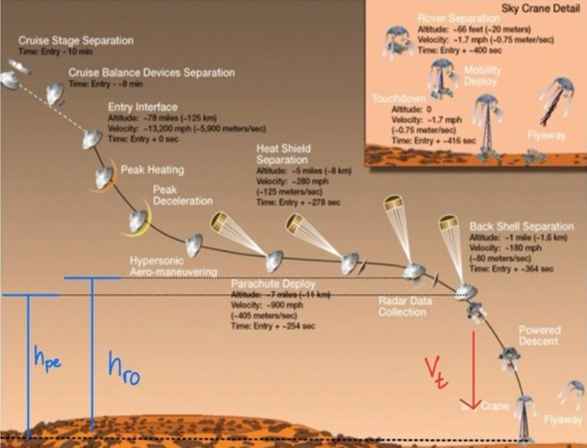
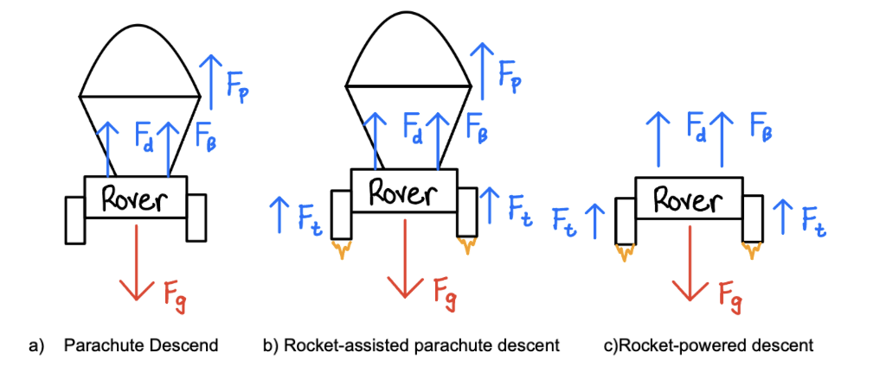
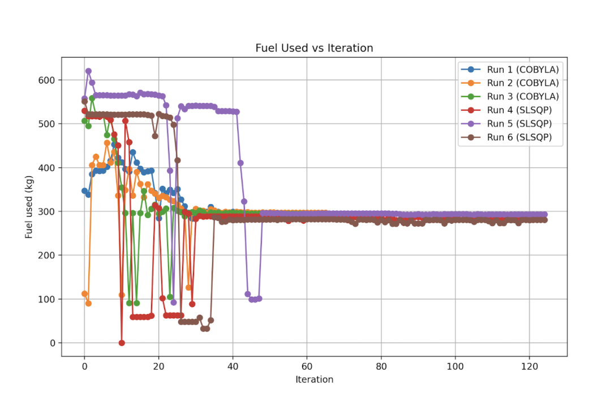
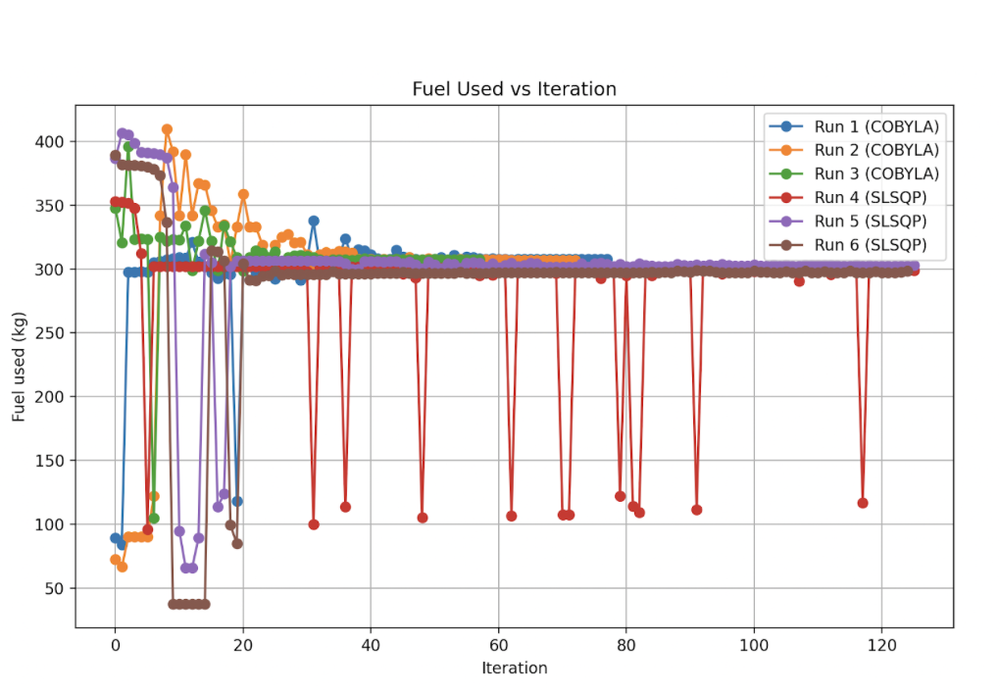
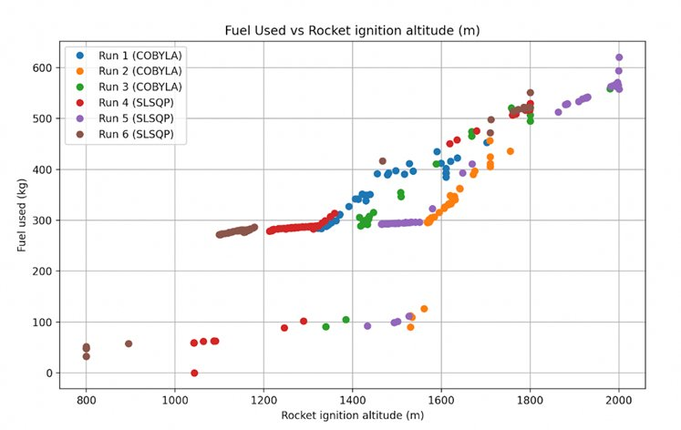
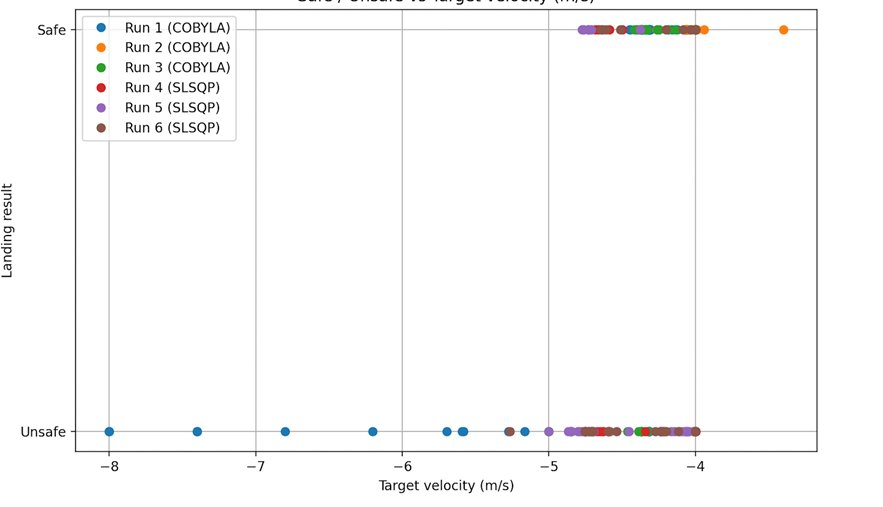

01 · Aerospace
Minimizing propellant consumption during the Entry, Descent, and Landing sequence of a Mars rover mission across normal and modified atmospheric conditions — using constrained nonlinear optimization with COBYLA and SLSQP in Python.
Objective
The EDL phase of a Mars rover mission begins after atmospheric entry and ends at rover touchdown. The rover must transition from hypersonic entry through parachute deceleration and into rocket-powered descent — all while Mars's thin atmosphere, reduced gravity, and variable wind conditions constrain the available options. Fuel is finite and irreplaceable; any excess consumed during descent is weight that could have served the mission.
This project formulated a constrained nonlinear optimization problem to determine the set of descent control parameters that minimizes total propellant consumption while guaranteeing a structurally survivable touchdown. The simulation framework modeled daily-variable atmospheric conditions, enabling the optimizer to be run on any specific landing day with real atmospheric inputs.
Formulation
The optimization vector consists of five parameters that control how and when the descent system transitions between phases and how the controller responds during the final powered descent:
hpe — parachute ejection altitude (300–1500 m). Controls when the rover transitions from aerodynamic to rocket deceleration. Too low and there is insufficient altitude for the rockets to stabilize the descent; too high and the rocket must burn longer.
hro — rocket ignition altitude (800–2000 m). Must occur above hpe by constraint. Higher ignition altitudes mean longer burn times and greater fuel consumption; the optimizer consistently found that igniting close to the parachute ejection altitude minimized fuel use while maintaining stability.
Vt — target vertical descent velocity (−8 to −4 m/s). The setpoint for the speed controller during rocket descent. This proved to be the most sensitive design variable — small deviations near −4 m/s determine whether a landing is classified as safe or unsafe.
Kp — proportional gain (300–5000). Controls the aggressiveness of velocity corrections during powered descent. Larger values provide faster response but can cause oscillation.
Kd — derivative gain (1–100). Safe optimized solutions consistently moved Kd toward lower values, suggesting that lower derivative gains produce smoother control responses and reduce aggressive corrective maneuvers near touchdown.

NASA EDL sequence — design variables hpe, hro, and Vt act during the parachute ejection through rocket-powered descent phases
Dynamics
The simulation models each phase of the descent with its own equations of motion. During parachute-only descent, drag and buoyancy decelerate the vehicle. Once rockets ignite alongside the parachute, thrust is added. After parachute ejection, the rocket system alone — governed by the PID speed controller with gains Kp and Kd — carries the rover to sky-crane deployment altitude. Wind speed and atmospheric density scaling (ρscale) are incorporated as daily-variable inputs.

Free body diagrams — parachute-only descent (left), rocket-assisted parachute descent (center), rocket-powered descent (right)
Results
Six optimization runs were conducted — three with COBYLA and three with SLSQP — each starting from a different initial design vector. Under normal atmospheric conditions (ρscale = 1, wind = 0 m/s), fuel consumption ranged from 280.48 to 296.83 kg, with SLSQP's best run (Run 6) achieving the lowest value. When modified conditions were introduced (ρscale = 0.9, wind = −5 m/s), all runs consumed more fuel — ranging from 298.59 to 307.64 kg.
The increased fuel cost under modified conditions has two causes. A 10% reduction in atmospheric density reduces aerodynamic drag, so the propulsion system must perform more active braking. The non-zero wind speed introduces an external disturbance the controller must continuously correct for. Together these effects add approximately 15–20 kg of fuel across every run — a direct illustration of why atmospheric uncertainty matters in mission design.
Both solvers converged to feasible solutions that satisfied all five constraints. SLSQP enforced constraints more tightly, while COBYLA explored the design space more broadly. The convergence plots show both solvers finding comparable solutions from very different starting points, which builds confidence that the results reflect genuine optima rather than numerical artifacts.


Fuel consumption convergence — normal conditions (left, best: 280.48 kg) · modified conditions with ρscale=0.9 and wind=−5 m/s (right, best: 298.59 kg)


Fuel used vs. rocket ignition altitude — higher ignition altitudes consistently increase fuel consumption (left) · Safe/unsafe landing classification vs. target velocity Vt — the −4 m/s boundary is the critical threshold (right)
Reflection
The target velocity Vt was the most sensitive design variable — small deviations near −4 m/s determined whether a landing was classified as safe or unsafe across the entire design space. Getting this parameter right matters far more than optimizing altitude setpoints.
SLSQP produced tighter constraint enforcement and lower objective values, while COBYLA explored the space more broadly. Both reached comparable feasible solutions from diverse starting points — confirming that the results reflect real optima rather than solver artifacts.
Modified atmospheric conditions added 15–20 kg of fuel across every run, directly illustrating why Mars mission designers must account for atmospheric variability. An optimizer tuned for nominal conditions will be suboptimal on most actual landing days.